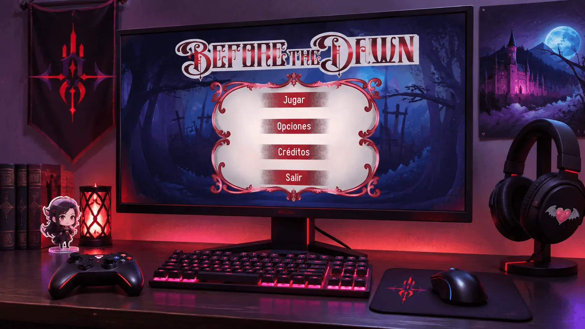
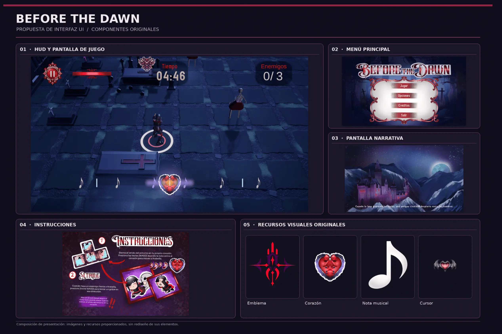
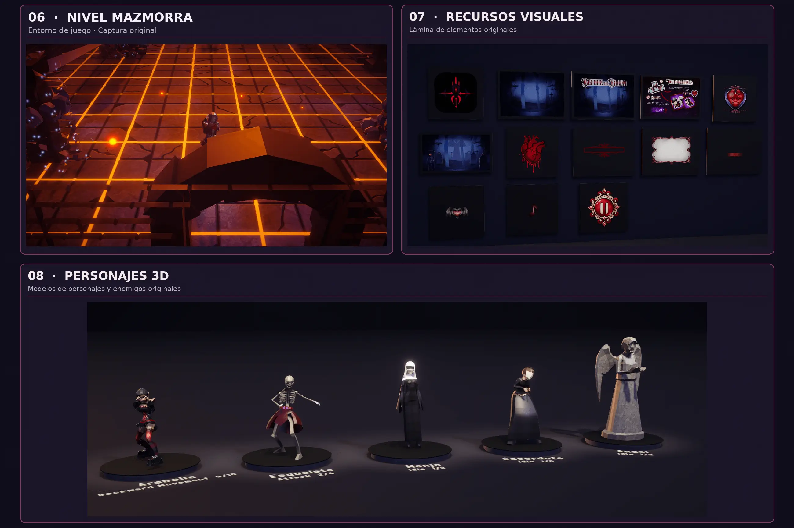
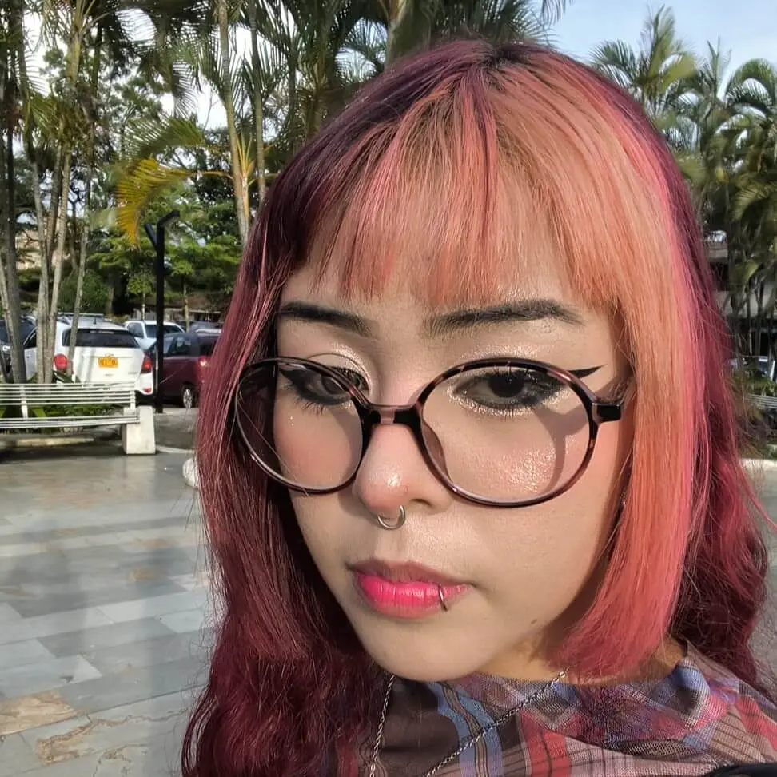
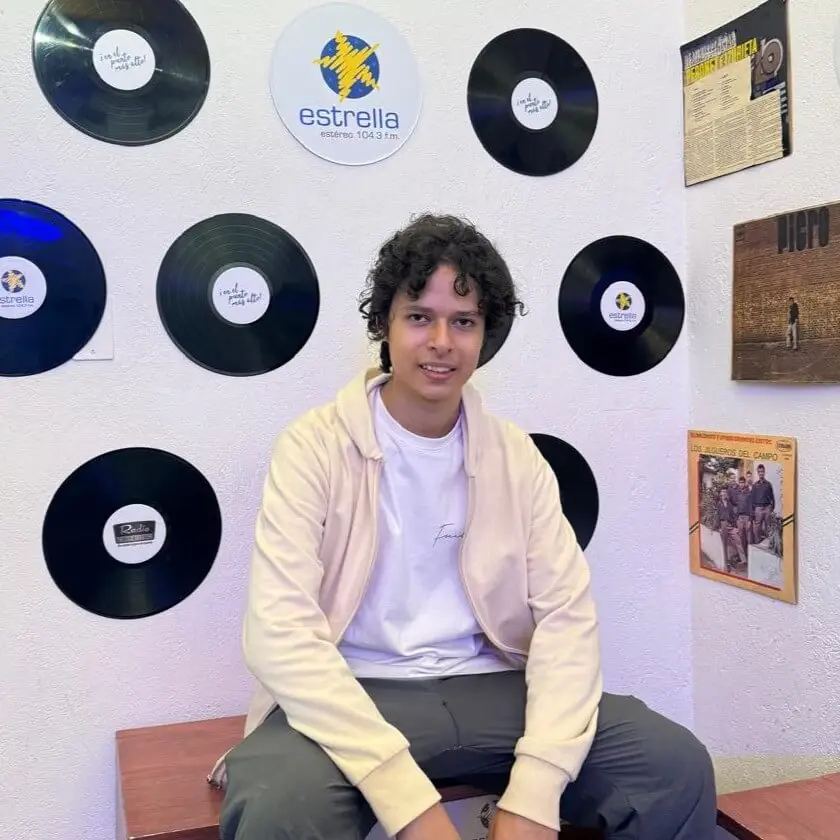
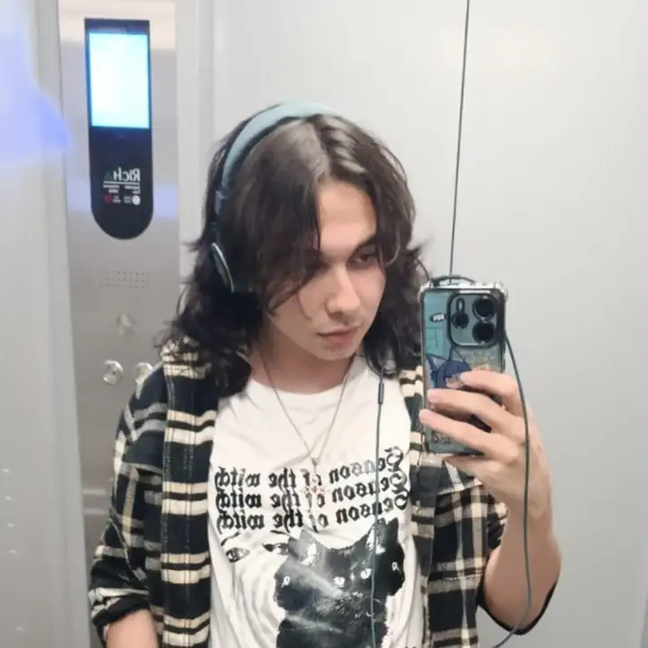

Asignatura
Entretenimiento Digital, Producción, Creación de Videojuego
Docente
Andrés Adrián Martínez Carmona
Videojuego de ritmo donde el jugador controla a Arabella, una vampiresa con la misión de robar el Santo Grial antes del amanecer. La mecánica exige cruzar entornos hostiles y combatir enemigos en estricta sincronía con la música. El proyecto nace como un reto técnico y creativo centrado en la complejidad del diseño de sistemas rítmicos.
Conoce másIntegrantes del proyecto
-

Dahiana Álvarez
Rodríguez -

Jacob Andres
Ceballos Legarda -
Miguel Zapata
Restrepo -

Tomas Sierra
Ochoa -
Willian Eduardo
Valencia Criollo